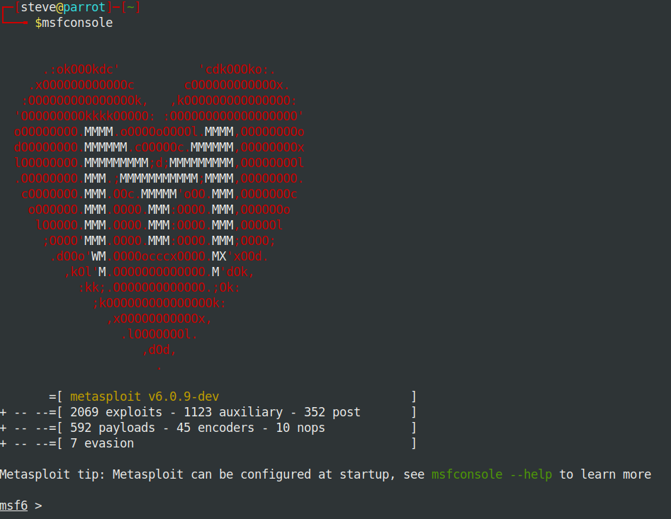

The Metasploit Project is a computer security project that provides information about security vulnerabilities and aids in penetration testing and IDS signature development. It is owned by Boston, Massachusetts-based security company Rapid7.
Its best-known sub-project is the open-source Metasploit Framework, a tool for developing and executing exploit code against a remote target machine. Other important sub-projects include the Opcode Database, shellcode archive and related research.
The Metasploit Project includes anti-forensic and evasion tools, some of which are built into the Metasploit Framework. Metasploit is pre-installed in the Kali Linux operating system.
